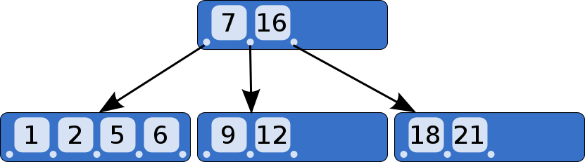

B-Tree（B树）是一种自平衡查找树，能够保持数据有序。这种数据结构能够让查找数据、顺序访问、插入数据及删除的动作，倒在对数时间内完成，B树概括来说是一个一般化的二分搜索树，可以拥有多余2个子节点。与自平衡二叉查找树不同，B树为系统大块数据的读写操作做了优化。B树减少定位记录时所经历的中间过程，从而加快存取速度。B树这种数据结构可以用来描述外部存储。这种数据结构常被引用在数据库和文件系统上。
B树
文件系统中的文件是以树的形式存储的，查找文件的效率跟树的高度直接相关，为了加快文件查找速度，我们使用M叉查找树，因为一个完全二叉树的高度大约是$log_2N$，而一个完全M叉树的高度大约是$log_MN$。
建立M叉树的方式跟建立二叉树的方式相同，在二叉树查找树中，需要一个关键字来决定两个分支到底用哪个分支，在M叉查找树中，需要M-1个关键字来决定选取哪个分支。为了保证查找的性能，我们要让这个M叉树保持平衡。实现这种想法使用的数据结构叫B树。
一个M叉B树具有以下特性：
- 数据项存储在树叶上。
- 非叶节点存储M-1个关键字以指示搜索的方向，关键字i代表子树i+1中的最小的关键字。
- 树的根或者是一片树叶，或者其儿子数载2～M之间。
- 除根外，所有非叶节点的儿子数在M/2(向上取整)～M之间。
- 所有的树叶都在相同的深度上。
一个5叉B树如下所示：

在B树中，内部（非叶子）节点可以拥有可变数量的子节点（数量范围预先定义好）。当数据被插入或从一个节点中移除，它的子节点数量发生变化。为了维持在预先设定的数量范围内，内部节点可能会被合并或者分离。因为子节点数量有一定的允许范围，所以B树不需要像其他自平衡查找树那样频繁地重新保持平衡，但是由于节点没有被完全填充，可能浪费了一些空间。子节点数量的上界和下界依特定的实现而设置。例如，在一个2-3 B树（通常简称2-3树），每一个内部节点只能有2或3个子节点。
B树中每一个内部节点会包含一定数量的键值。通常，键值的数量被选定在d和2d之间。在实际中，键值占用了节点中大部分的空间。因数2将保证节点可以被拆分或组合。如果一个内部节点有2d个键值，那么添加一个键值给此节点的过程，将会拆分2d键值为2个d键值的节点，并把中间值节点添加给父节点。每一个拆分的节点需要最小数目的键值。相似地，如果一个内部节点和他的邻居两者都有d个键值，那么将通过它与邻居的合并来删除一个键值。删除此键值将导致此节点拥有d−1个键值（与邻居的合并则加上d个键值，再加上从邻居节点的父节点移来的一个键值）结果为完全填充的2d个键值。
一个Ｂ树通过约束所有叶子节点在相同深度来保持平衡。深度在元素添加至树的过程中缓慢增长，而整体深度极少地增长，并导致所有叶子节点与根节点距离加1。
在存取节点数据所耗时间远超过处理节点数据所耗时间的情况下，Ｂ树在可选的实现中拥有很多优势，因为存取节点的开销被分摊到里层节点的多次操作上。这通常出现在当节点存储在二级存储器如硬盘存储器上。通过最大化内部里层节点的子节点的数量，树的高度减小，存取节点的开销被缩减。另外，重新平衡树的动作也更少出现。子节点的最大数量取决于，每个子节点必需存储的信息量，和完整磁盘块的大小或者二次存储器中类似的容量。虽然2-3 树更易于解释，实际运用中，Ｂ树使用二级存储器，需要要大量数目的子节点来提升效率。
一个Ｂ树在它内部节点中存储键值，但不需在叶子节点上存储这些键值的记录。大体上的一类包含一些变体，如B+树和Ｂ*树。
B+树
在Ｂ+树中，这些键值的拷贝被存储在内部节点；键值和记录存储在叶子节点；另外，一个叶子节点可以包含一个指针，指向另一个叶子节点以加速顺序存取。
一个B+树的例子如下图所示：

B+ 树通常用于数据库和操作系统的文件系统中。NTFS, ReiserFS, NSS, XFS, JFS, ReFS 和BFS等文件系统都在使用B+树作为元数据索引。B+ 树的特点是能够保持数据稳定有序，其插入与修改拥有较稳定的对数时间复杂度。B+ 树元素自底向上插入。